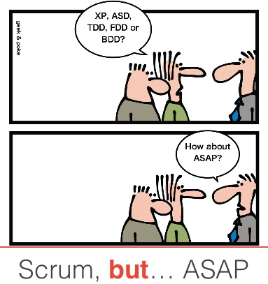

ScrumBut, pero peor (Mucho peor)
Hasta hace unos meses participe de un proyecto bastante grande. El proyecto era para un cliente de Estados Unidos, donde uno de los socios era nativo y el otro era un Argentino viviendo allá desde hace unos cuantos años.
Estuve trabajando unos 2 años desde Argentina, de manera freelance y mi contacto diario era con el Argentino (Product Owner).
El proyecto desde que empece hasta que me fui, tenía cambios radicales cada 2 meses, nunca estuvo definido hacia donde íbamos, y se iba definiendo sobre la marcha.
Esto lo hacia un proyecto perfecto para implementar Scrum, ya que era un sistema complejo, donde equivocarnos temprano era lo mejor que nos podía pasar, podríamos haber tenido un crecimiento orgánico y salir a producción rápido.
Utilizamos Scrum, pero mal, muy mal. Scrum te hace ver los problemas en los procesos, hacen que salgan a la luz, y esto es lo bueno del framework, ya que te da la posibilidad de corregirlos a tiempo. Pero en este caso no fue así, donde se visibilizaban los problemas, se optaba por modificar el framework (de ahí ScrumBut).
Estos son algunos de los problemas que identifico en mi propia retrospectiva post-proyecto...
Nunca salir a producción
Uno de los puntos por los que (en mi opinión) el proyecto fallo, es que para el Product Owner, el sistema nunca estaba listo. Varias veces insistí con la necesidad de salir a producción, y así empezar a tener feedback, ya sea para mejorar o para cambiar el rumbo, pero por mas que se llegaban a los objetivos para el release, el último día aparecían cambios radicales, los cuales demoraban la salida 2 meses más. Esto se repitió durante toda mi participación en el proyecto.
Sprint Backlog "variable"
Una de las "reglas" del framework, es definir el tiempo de duración de los sprints, y limitarse a realizar las tareas del sprint Backlog. Con este proyecto, era imposible entender para el cliente, ya que llego a agregar tareas al sprint incluso 1 día después de definirlo y comenzar a trabajar.
Mirada Taylorista del desarrollo
Estas costumbres son las más difíciles de cambiar.
Reporte de horas
La insistencia en la carga de horas antes y después de realizada la tarea es algo aburrido y agobiante. Yo prefiero estimar por puntos, ya que las horas no me dicen nada. No se pueden utilizar para prever cuanto tiempo se tardara en otras tareas, en otra etapa del desarrollo. En cambio, con puntos, si se puede medir la cantidad que el equipo puede realizar por iteración.
Equipos distribuidos
Si bien a mi me conviene hablar bien de equipos distribuidos, tengo que admitir que no es lo mejor. Es totalmente distinto el compromiso como equipo, y los lazos que se crean al estar todos bajo un mismo techo.
Cliente
Y acá podría hablar mucho, pero prefiero decir simplemente que hay clientes para todos los gustos ;)
Yo deje el proyecto en Agosto del 2015, entre los varios motivos, uno fue el desgaste, que podría haberse evitado si hubiéramos aplicado Scrum de la manera correcta.
Entre mis errores, me hago cargo, debería haber insistido más en aplicar el framework, poner más límites, insistir, ser el Agente de cambio.
Al día de la fecha, la aplicación sigue sin estar productiva y aprovecho para hacer el descargo, aún me deben 2 meses de trabajo :(
Comentarios
Comments powered by Disqus